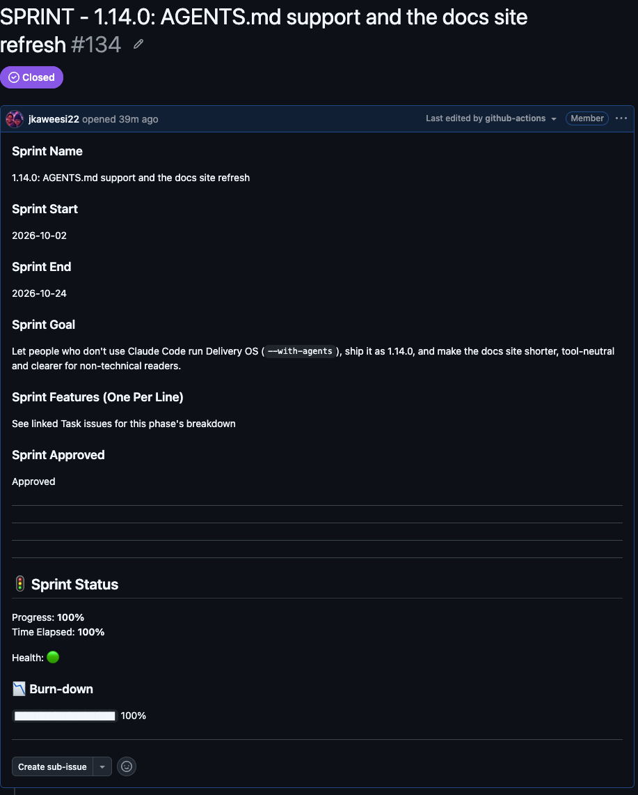

GitHub Delivery OS
Sprints, QA and release approvals, built into your GitHub repo. Run it from any AI coding agent, or by hand.
New in 1.14: works with any AI coding agent, not just Claude Code. Not technical? Start here →
Get started
1. Install
From your repo root. Pick how you work:
npx github-delivery-os install --with-templates --with-labels --with-agents .Adds the instructions to AGENTS.md, which most agents read. A few, like Aider, need to be pointed at the file.
npx github-delivery-os install --with-templates --with-labels --with-skill .Adds the delivery-ops skill to .claude/skills.
npx github-delivery-os install --with-templates --with-labels .Workflows, forms and labels only. You create issues yourself.
One person or a small project? Add --bundle lite. Want a preview first? Add --dry-run. Lite or full →
2. Ask your agent
Open your agent in the repo and say what you want:
Create a sprint called Sprint 1 for the login revamp, running Oct 1 to Oct 14, with features: sign-in page, password reset.
It checks the repo, shows exactly what it will create, and waits for your yes. More things to ask →
3. Name your approvers
Set these repo variables (Settings → Secrets and variables → Actions → Variables), or ask your agent to:
- Lite: nothing. The install sets
RELEASE_APPROVERto you. - Full:
RELEASE_APPROVER,QA_APPROVERandQA_ASSIGNEES(GitHub usernames, comma-separated for several).
Then check the install: npx github-delivery-os status .
Not sure which size? Let your agent guide you
Paste this into your agent. It asks a few questions, recommends lite or full, shows a preview and installs after you say yes.
Help me set up GitHub Delivery OS in this repo. First run "npx github-delivery-os list" to see what's available, then ask me a few plain questions (is it just me or a team? does anyone test before release?) and recommend the lite or full install. Show me a dry run ("npx github-delivery-os install ... --dry-run .") and only install after I say yes.
On Claude Code you can also add a permanent setup assistant that works in any repo: npx github-delivery-os setup-skill
See it running
A real sprint from this repo: one issue per feature, a burn-down that updates itself, and the sprint closing on its own at 100%.

Lite or full
Pick the size that fits today. You can add or remove pieces any time.
| Lite | Full (default) | |
|---|---|---|
| Best for | Working alone, or a small project | A team with a QA step |
| Sprints, tasks, bugs, burn-down | ✓ | ✓ |
| Release approval | One approver: you | Release approver + QA approver |
| Rolling QA issue and QA requests | Add later | ✓ |
| Telegram alerts | Add later | Add later |
Shipping with lite: open a Production Release issue, the approver comments approved, and it gets ready-for-deploy. declined holds it back.
Change it any time
Ask your agent. It previews first and waits for your yes.
| Say this | What happens |
|---|---|
| "What do I have installed?" | Lists what's on and what's off. |
| "Add QA sign-off." | Adds the QA pieces. Releases then need a QA approver too, so set QA_APPROVER and QA_ASSIGNEES. |
| "Turn on Telegram alerts." | Adds the alerts. You add the secrets TELEGRAM_BOT_TOKEN and TELEGRAM_CHAT_ID. |
| "Take QA sign-off out." | Removes only files nothing else needs. |
Your variables, secrets and labels are never touched, and a plain install --update keeps your choices.
Example: turning on Telegram, then QA
You: I want Telegram alerts for this repo.
Agent: A dry run of `add telegram` shows it
would add one workflow:
.github/workflows/telegram-issues.yml.
Nothing else changes.
After it's added you create two repo
secrets yourself (Settings → Secrets and
variables → Actions):
TELEGRAM_BOT_TOKEN from @BotFather
TELEGRAM_CHAT_ID where alerts go
Shall I run `add telegram .` for real?
You: Yes, add it.
Agent: Added. `list` shows the telegram pack as
installed. Two things for you: add the
two secrets, and commit and push the new
workflow, since it only runs once it's
on the default branch.
You: Now I also want QA sign-off before
releases.
Agent: A dry run of `add qa` shows what comes
in: QA assignment, the rolling QA issue,
QA approval, the QA Request form, and
QA-aware release workflows that replace
lite's. What changes for you: a release
then needs the QA approver's approval as
well as yours. You'd set QA_APPROVER and
QA_ASSIGNEES. Who should they be? I
won't set them unless you tell me to,
because they name a real person.
Ask your agent
Delivery Ops is the set of instructions your agent follows. It checks the repo first, shows what it will create, and acts only after you confirm. Claude Code gets it as a skill (--with-skill); other agents read it from AGENTS.md (--with-agents).
| Ask | What happens |
|---|---|
| "Create a sprint called Sprint 14 for <goal>, running <start> to <end>, with features: …" | Opens a sprint; each feature becomes a child issue |
| "Open a production release for <project> v2.4.1, sprint #N, summary: …" | Opens a release issue and tags the approver |
| "Approve release #N" / "Decline release #N, <reason>" | Checks you are the approver, then posts the right comment |
| "Open a QA request for <feature>, related to #N" | Opens a QA request and assigns your QA team |
| "Mark QA #N as approved" | Checks you are the QA approver, then comments |
| "File a bug: <summary>, severity <level>, steps: …" | Opens a bug report |
| "Create a task to <summary>, owner <name>, priority P1" | Opens a task |
| "How's Sprint 14 doing?" / "What releases are waiting?" | Reads status; no issue number needed |
It can also track tasks on its own as you work, or turn a spec into a phase-and-task breakdown (shown for confirmation first). See the full instructions or How To.
Example: a short session
You: Create a sprint called Sprint 14 for the checkout revamp, running
Oct 1 to Oct 14, with features: guest checkout, saved cards,
order confirmation email.
Agent: Checked acme/storefront: Delivery OS is installed and the sprint
and planning labels exist. I'm about to create:
Title: SPRINT - Sprint 14
Labels: sprint, planning
Goal: Checkout revamp
Dates: 2026-10-01 to 2026-10-14
Features: guest checkout
saved cards
order confirmation email
Create it?
You: yes
Agent: Created acme/storefront#57. sprint-child-creator has opened
#58 guest checkout, #59 saved cards and #60 order confirmation
email. Closing each one moves the sprint's burn-down.
You: Approve release #61
Agent: You're logged in as jkaweesi22, which matches RELEASE_APPROVER.
Posting "approved" on #61. authorize-deployment will mark it
ready to deploy.Example: filing a bug and a task, step by step
Illustrative walkthrough against acme/storefront, a repo with Delivery OS installed (same example repo as the full walkthrough below).
Filing the bug:
- In your agent, inside (or pointed at, via
--repo) the target repo, describe the bug in plain language:
"File a bug on acme/storefront — the order request form submits with an empty phone number, severity high. Steps: fill in the form, leave phone blank, submit. Expected: should block submission. Actual: submits anyway, so there's no way to contact the customer. Tested on Chrome, desktop, production." - The agent pre-flights the repo — confirms Delivery OS is installed and the
bug/qalabels exist. - The agent shows the exact issue it's about to create before doing anything: Title
[BUG] Order request form submits with empty phone number; Labelsbug,qa; body fields (Platform, Severity: High, Build/Version, Steps to Reproduce, Expected/Actual Result, Test Environment) filled in from what you said. - Confirm ("yes") when asked to create it.
- The agent runs
gh issue createand reports back the issue — e.g.acme/storefront#42. Nothing else happens automatically; bug reports don't trigger a workflow, they're just labeled and tracked.
Filing the follow-up task:
- Ask the agent to turn the bug into tracked work, referencing the bug's issue number:
"Create a task to add phone number validation to the order form, owner @alex, priority P1, status Backlog, acceptance: form blocks submission until a valid phone number is entered. Link it to #42." - The agent shows the constructed issue: Title
TASK - Add phone number validation to order form; Labelstask; body: Task Summary, Description (references #42), Owner → @alex, Priority → P1 - High, Status → Backlog, Acceptance Criteria, Artifacts/Links → Related bug: #42. - Confirm ("yes") to create it.
- The agent runs
gh issue create. Same as the bug — no workflow trigger, just labeled and tracked, now linked back to the bug it addresses.
Full example: shipping a feature end-to-end
A realistic session, run from inside the repo. RELEASE_APPROVER, QA_APPROVER, and QA_ASSIGNEES are already configured.
You: Create a sprint called "Sprint 14 - Checkout Revamp", running 2026-09-16 to
2026-09-30, goal is shipping the new checkout flow, features:
- Redesign cart summary
- Add saved payment methods
- Fix tax rounding bug
Agent: This will create an issue in acme/storefront:
Title: SPRINT - Sprint 14 - Checkout Revamp
Labels: sprint, planning
Body:
### Sprint Name
Sprint 14 - Checkout Revamp
### Sprint Start
2026-09-16
### Sprint End
2026-09-30
### Sprint Goal
Ship the new checkout flow
### Sprint Features (One Per Line)
Redesign cart summary
Add saved payment methods
Fix tax rounding bug
### Sprint Approved
Pending
Create this issue?
You: yes
Agent: Created #52. sprint-child-creator will fire on open and create one child
issue per feature — #53 "Redesign cart summary", #54 "Add saved payment
methods", #55 "Fix tax rounding bug" — each labeled sprint-active and
linked back with "Parent Sprint: #52".
[ ... engineers do the work, close #53 and #54 as they land ... ]
You: How's Sprint 14 doing?
Agent: Reading #52... ## 🚦 Sprint Status: 67% complete (2/3 closed), 20% of
sprint time elapsed, 🟢 on track.
You: QA found a rounding issue in the tax calc — file a bug. Severity high,
repros on checkout with 3+ items, expected total matches line items,
actual is off by $0.01.
Agent: This will create an issue in acme/storefront:
Title: [BUG] Tax rounding off by $0.01 with 3+ items
Labels: bug, qa
Body: (Platform, Severity: High, Steps to Reproduce, Expected vs.
Actual Result, Test Environment filled in from what you said)
Create this issue?
You: yes
Agent: Created #56.
[ ... #55 fixed, referencing #56 ... ]
You: Open a QA request for the tax rounding fix, related to #55, test on
staging, acceptance: totals match to the cent for carts of 1-10 items.
Agent: This will create an issue in acme/storefront:
Title: QA REQUEST - Tax rounding fix
Labels: qa-request
Body: (Related Sprint Task Issue #55, What to Test, Environment +
Build Link: staging, Acceptance Criteria filled in)
Create this issue?
You: yes
Agent: Created #57. auto-assign-qa will assign it to the configured
QA_ASSIGNEES.
[ ... QA tests it, comes back clean ... ]
You: Mark QA #57 as approved, looks good.
Agent: Checking gh auth status... authenticated as jane-qa, which matches this
repo's QA_APPROVER. Posting:
"looks good — verified on staging, totals match to the cent"
on #57.
You: yes, post it
Agent: Posted. Now close #55 to update the sprint burn-down?
You: yes
Agent: Closed #55. Sprint 14 is now 100% complete — auto-close-sprint closed
#52 and posted a completion comment.
You: Open a production release for storefront v2.4.1, sprint #52, summary
"checkout revamp: new cart summary, saved payment methods, tax rounding
fix", QA evidence: #57.
Agent: This will create an issue in acme/storefront:
Title: PRODUCTION RELEASE - storefront - v2.4.1
Labels: release, production, approval
Body:
### Sprint Reference (Sprint Planning Issue #)
#52
### Version / Build Number
v2.4.1
### Release Summary
Checkout revamp: new cart summary, saved payment methods, tax
rounding fix
### QA Summary + Evidence Links
#57
### Overall QA Recommendation
Approve for Production
### Deployment Authorized
No
Create this issue?
You: yes
Agent: Created #58. notify-release-approver posted a comment tagging this
repo's RELEASE_APPROVER (john-lead).
[ ... some time later, as john-lead ... ]
You: Approve release #58.
Agent: Checking gh auth status... authenticated as john-lead, which matches
RELEASE_APPROVER. Posting "approved" on #58.
You: yes
Agent: Posted. authorize-deployment will add ready-for-deploy once both
approvers (release + QA) have a qualifying comment on record.Each "yes" above is a real confirmation gate — the agent shows the exact issue/comment content before it creates or posts anything, since it's a visible action in the repo.
What you get
main lands on one rolling QA issue, assigned to your QA team.
Workflows
Lite installs the five marked Lite. Packs add the rest. Details are in governance.
| Workflow | Trigger | What it does |
|---|---|---|
| sprint-child-creator Lite + Full | Issue titled SPRINT - opened | Creates one child issue per feature line |
| auto-close-sprint Lite + Full | Child issue closed or reopened | Updates the burn-down; closes the sprint at 100% |
| notify-release-approver Lite + Full | Issue labeled production opened | Tags the approver and lists what's in the release |
| authorize-deployment Lite + Full | Comment on a production issue | Adds ready-for-deploy once approved, or declined |
| setup-labels Lite + Full | Manual | Creates the labels Delivery OS needs |
| auto-qa-request Full · pack: qa | Push to main | Adds each change to one rolling QA issue (tune with DELIVERY_OS_AUTO_QA_MODE) |
| qa-rollup-approval Full · pack: qa | Comment on the rolling QA issue | QA approver approves (closes it) or declines (keeps it open) |
| auto-assign-qa Full · pack: qa | Issue labeled qa or qa-request | Assigns QA_ASSIGNEES |
| telegram-issues Opt-in · pack: telegram | Issue, comment and PR events | Sends Telegram alerts when the two secrets are set |
Update
Ask your agent: "Check whether Delivery OS here is up to date, and show me what an update would change." Or from a terminal:
npx github-delivery-os@latest install --with-templates --with-labels --update .
Add the same --with-agents or --with-skill you installed with. An update keeps your bundle, packs and any workflows you added or removed. status . shows your version.
Command reference
Everything above is also available as plain commands, for people who prefer the terminal or want to script it.
Show every command
Install from a terminal
No clone, no config. From your repo root, just run:
npx github-delivery-os install --with-templates --with-labels --with-agents .
--with-labels needs gh auth. Add --with-agents (any AI agent) or --with-skill (Claude Code) for the instructions, and --dry-run to preview first.
| Command | When to run it |
|---|---|
install --with-templates . | First install — workflows + issue templates |
install --with-templates --with-labels . | Also create labels immediately via gh CLI |
install --with-templates --with-agents . | You'll operate this repo's Delivery OS from any AI coding agent that reads AGENTS.md |
install --with-templates --with-skill . | You'll operate this repo's Delivery OS from Claude Code |
install --with-templates --with-labels --with-skill . | Everything at once, in one command |
install --bundle lite --with-templates --with-labels --with-skill . | One person or a small project — sprints, tasks, bugs and a single-approver release, without the QA machinery. Sets you as the release approver |
install --only a,b … / --skip a,b | Pick individual workflows (names from list) instead of a whole bundle |
list . | See every bundle, pack and workflow, and which are installed in this repo (--json for tools) |
add qa . / add telegram . / add <workflow> . | Add a pack or a single workflow later, without reinstalling (--dry-run to preview) |
remove qa . / remove <workflow> . | Take a pack or workflow away again; deletes only the files nothing else needs |
setup-skill | Add the Claude Code skill that helps you choose what to install, before anything is installed |
install --dry-run … | Preview any combination above — nothing is written |
install --update … | Update an existing install, or add a flag you skipped earlier |
status . | Check what's installed, its version, and for broken installs |
shell-hook --install | Get a reminder in your terminal when you cd into an out-of-date repo |
uninstall --with-templates --with-skill --with-agents . | Remove everything, including templates, the skill and the AGENTS.md section |
Check and update from a terminal
Check what's installed and whether a newer version is available:
npx github-delivery-os@latest status .
Then pull the latest workflows, templates, labels, and skill. --update replaces files that are already installed; without it, existing files are skipped:
npx github-delivery-os@latest install --with-templates --with-labels --with-skill --update .
For a reminder in any terminal whenever you cd into an out-of-date repo:
npx github-delivery-os@latest shell-hook --install